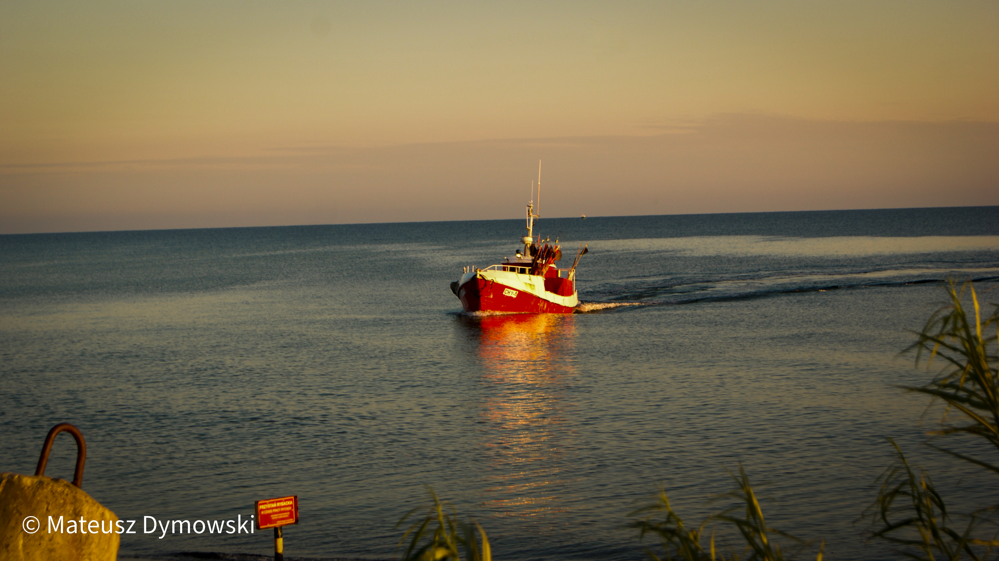

O mnie
Hmm...Może coś na początek?
No dobrze, zacznijmy od tego, że mam na imię Mateusz. 😊 Jestem pełen energii i zawsze gotowy do działania. Moja pasja do fotografii i WebDevelopingu jest nieograniczona! Uwielbiam odkrywać nowe sposoby na uchwycenie piękna świata i tworzenie innowacyjnych stron internetowych..
Ah tak, a więc...
...jestem prawdziwym entuzjastą nowych technologii. Moje umiejętności informatyczne rozwijam w szkole o profilu technik informatyk, co pozwala mi na ciągłe poszerzanie wiedzy i doskonalenie swoich umiejętności.💻
Coś jeszcze?
Oczywiście! Jestem osobą otwartą i towarzyską. Moja dobroć i empatia sprawiają, że ludzie czują się w moim towarzystwie komfortowo.😊 Zawsze chętnie słucham i pomagam innym.😎
Hmm... Może jeszcze coś o moich pasjach?
Moje hobby to nie tylko fotografia i WebDeveloping.👌 Uwielbiam podróżować i poznawać nowe kultury. Cenię sobie także spędzanie czasu z przyjaciółmi i rodziną.😁
No dobrze, a więc...
...w wolnym czasie lubię oglądać filmy i słuchać muzyki.🙉 Jestem osobą otwartą na nowe doświadczenia i zawsze chętnie poznaję coś nowego😜
I na koniec...
...jestem pełen optymizmu i wiary w siebie.👌 Wierzę, że wszystko jest możliwe, jeśli tylko się tego chce.😏 Moja pasja i determinacja są moimi największymi atutami.😉
Moje projekty
IT/WebDev
-
Pierwszy Projekt

-
Projekt 2
.

Zdjęcia
Prosze nie bądźcie dla mnie oschli, dopiero zaczynam z fotografia ! 😁
-
Zdjęcie 1

-
Zdjęcie 2

-
Zdjęcie 3

-
Zdjęcie 4

-
Zdjęcie 5

-
Zdjęcie 6

-
Zdjęcie 7
 -
Zdjęcie 8

-
Zdjęcie 9
w przyszlosci zdjecie zostanie udostepnione.

-
Zdjęcie 10
w przyszlosci zdjecie zostanie udostepnione.

-
Zdjęcie 11
w przyszlosci zdjecie zostanie udostepnione.

-
Zdjęcie 12
w przyszlosci zdjecie zostanie udostepnione.

-
Zdjęcie 13
w przyszlosci zdjecie zostanie udostepnione.

-
Zdjęcie 14
w przyszlosci zdjecie zostanie udostepnione.

-
Zdjęcie 15
w przyszlosci zdjecie zostanie udostepnione.

-
Zdjęcie 16
w przyszlosci zdjecie zostanie udostepnione.

-
Zdjęcie 17
w przyszlosci zdjecie zostanie udostepnione.

-
Zdjęcie 18
w przyszlosci zdjecie zostanie udostepnione.

-
Zdjęcie 19
w przyszlosci zdjecie zostanie udostepnione.

-
Zdjęcie 20
w przyszlosci zdjecie zostanie udostepnione.

Skontaktuj się ze mną
Skontaktuj się ze mną aby omówić współpracę ,lub poprosić o poradę w IT /Fotografii.